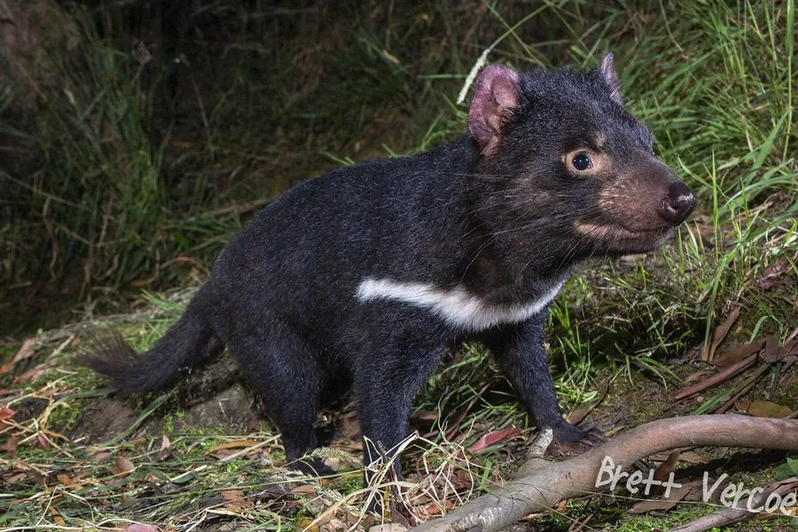

哺乳动物 · 动物界
袋獾 Sarcophilus harrisii

澳大利亚塔斯马尼亚岛特有的有袋类食肉动物，体型粗壮、叫声刺耳，咬合力极强，因面部肿瘤病被列为濒危。
- 分类
- 门脊索动物门纲哺乳纲目袋鼬目科袋鼬科属袋獾属
- 栖息环境
- 塔斯马尼亚的森林、灌丛与海岸附近
- 地理分布
- 澳大利亚塔斯马尼亚岛特有
- 保护级别
- IUCN 濒危（EN）；非中国分布物种
物种志
袋獾体长 57–65 厘米，尾长 24–30 厘米，雄性体重 6–8 千克，雌性 4–6 千克，是现存最大的有袋类食肉动物。它的身体粗壮，头部宽大，毛色为黑色，胸前和臀部常有白色斑块；耳朵小而圆，牙齿锋利，咬合力按体重计算在哺乳动物中名列前茅。
袋獾仅分布于澳大利亚塔斯马尼亚岛，栖息在森林、灌丛和海岸附近。它是夜行性食腐动物，也捕食小型哺乳动物、鸟类、蜥蜴和昆虫，进食时连骨头和皮毛一起吞下。袋獾性情凶猛，遇到威胁时会张口示威并发出刺耳尖叫。雌性妊娠期约 21 天，每胎可产 20–30 个幼仔，但只有 4 个乳头，最终仅 2–4 只存活，寿命约 5–6 年。自 1990 年代以来，传染性面部肿瘤病导致种群锐减，袋獾被列为濒危。
形态与习性
- 食性腐肉、小型哺乳动物、鸟类与昆虫
- 体长57–65 cm，尾长 24–30 cm
- 体重雄 6–8 kg，雌 4–6 kg
- 寿命约 5–6 年
- 繁殖每胎 20–30 仔，仅 2–4 只存活
- 咬合力按体重计算极强
趣味知识
- 袋獾的咬合力按体重计算在哺乳动物中名列前茅。
- 雌兽一胎可产 20–30 个幼仔，但只有 4 个乳头。
- 传染性面部肿瘤病使塔斯马尼亚袋獾数量锐减。